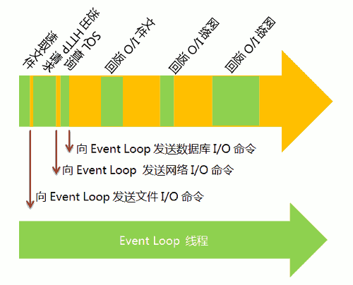
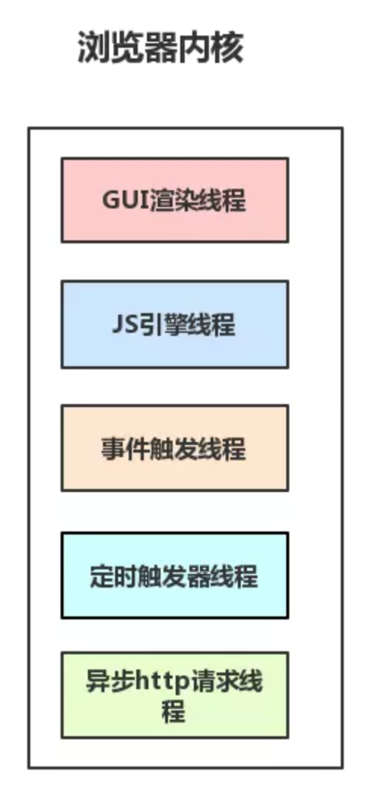
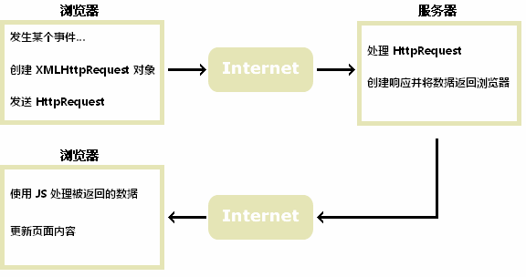

什么是 Ajax ?

AJAX（Asynchronous JavaScript and XML），是一种异步请求数据的 Web 开发技术。它不是新的编程语言，而是一种使用现有标准的新方法。其最大的优点是在不重新加载整个页面的情况下，可以与服务器交换数据并更新部分网页内容。
*注：AJAX 不需要任何浏览器插件，但需要用户允许 JavaScript 在浏览器上执行。
*进程、线程 1
进程（process）和线程（thread）是操作系统的基本概念，比较抽象，不易掌握。
对于操作系统，一个任务就是一个 _进程 （process），比如打开一个浏览器就是启动一个浏览器进程，打开一个记事本就启动了一个记事本进程，打开两个记事本就是启动了两个记事本进程。
有些进程不止同时只做一件事，比如 Word ，它可以同时进行打字、拼写检查、打印等事情。
在一个进程内部，要同时干多件事，就需要同时运行多个“子任务”，我们把进程内的这些“子任务”称为 _线程 （Thread）。
*注：一个进程至少有一个线程。
线程是最小的执行单元，而进程由至少一个线程组成。如何调度进程和线程，完全由操作系统决定，程序自己不能决定什么时候执行，执行多长时间。
多进程和多线程的程序涉及到同步、数据共享的问题，编写进来更复杂。
阮一峰老师写过一篇 进程与线程的一个简单解释 也不错，浅显易懂，推荐一下。
操作系统的设计，可以归结为三点：
- 以多进程形式，允许多个任务同时进行；
- 以多线程形式，允许单个任务分成不同的部分进行；
- 提供协调机制，一方面防止进程之间和线程之间产生冲突，另一方面允许进程之间和线程之间共享资源。
由此，也就容易理解，如果有很多任务需要执行，不外乎三种解决办法：
- 排队 。因为一个进程一次只能执行一个任务，只好等前面的任务执行完了，再执行后面的任务；
- 新建进程 。使用 fork 命令，为每个任务新建一个进程；
- 新建线程 。因为进程太耗费资源，所以如今的程序往往允许一个进程包含多个线程，由线程去完成任务。
*注：一般情况下，一个进程一次只能执行一个任务（即包含一个线程）。
单线程的 JS
以 JavaScript 语言为例，它是一种单线程语言，所有任务都在一个线程上完成，任务只好排队喽。一旦遇到大量任务或者遇到一个耗时的任务，网页就会出现“假死”（JavaScript 停不下来，也就无法响应用户的行为）。
那么，JavaScript 是如何解决这个问题的呢？ 事件循环（Event Loop）。
Event Loop 是一个程序结构，用于等待和发送消息和事件。
简单说，就是在程序中设置两个线程：一个负责程序本身的运行，称为“主线程”；另一个负责主线程与其他线程（主要是各种 I/O 操作）的通信，被称为“Event Loop 线程”（或“消息线程”）。
如右图所示，主线程的绿色部分，表示运行时间，橙色部分表示空闲时间。每当遇到 I/O 的时候，主线程就让 Event Loop 线程去通知相应的 I/O 程序，然后接着往后运行，所以不存在红色的等待时间。等到 I/O 程序完成操作，Event Loop 线程再把结果返回主线程。主线程就调用事先设定的回调函数，完成整个任务。
不难看出，由于多出了橙色的空闲时间，所以主线程得以运行更多的任务，这就提高了效率。这种运行模式称为“异步模式”（asynchronous I/O）或“非堵塞模式”（non-blocking mode）。
这正是 JavaScript 语言的运行方式 。
我们前面说过了，执行多任务的话，还可以新建进程或线程，为什么 JavaScript 是单线程，难道不能实现多线程吗？有兴趣的话，可以自己去捉摸一下。
多线程的浏览器 2
了解更多浏览器底层运行机制，可以阅读另一篇文章 - 浏览器 🌐
前面我们已经大概了解了进程和线程，稍微回顾下相关概念。
处理器（CPU）是计算机的核心，其负责承担计算机的计算任务。
进程是一个具有一定独立功能的程序在一个数据集上的一次动态执行的过程，是操作系统进行资源分配和调度的一个独立单位，是应用程序运行的载体。
*注：任一时刻，一个单核 CPU 只能运行一个进程，其他进程则处于非运行状态。
线程是程序执行中单一和顺序流程，是程序执行的最小单元。
那么，进程和线程是什么关系呢？
（1）进程是操作系统分配资源的最小单位，线程是程序执行的最小单位；
（2）一个进程由一个或多个线程组成，线程是一个进程中代码的不同执行路线；
（3）进程之间相互独立，但同一个进程下和各个线程之间共享程序的内存空间（包括代码段、数据集、堆等）及一些进程级的资源（如打开文件和信号）；
（4）调试和切换：线程上下文切换比进程上下文切换要快得多。
_浏览器内核 是通过取得页面内容、整理信息（应用 CSS）、计算和组合最终输出可视化的图像结果，通常也被称为渲染引擎。
Chrome 浏览器为每个 tab 页面单独启用进程，在浏览器中打开一个网页相当于新起了一个进程（进程内有自己的多线程）。
浏览器内核是多线程，在内核控制下各线程相互配合以保持同步，一个浏览器通常由以下常驻线程组成：
- GUI 渲染线程；
- JS 引擎线程；
- 事件触发线程；
- 定时触发线程；
- 异步 http 请求线程。
下面我们分别来了解下浏览器的这些常驻线程。
_1. GUI 渲染线程
GUI 渲染线程负责渲染浏览器界面 HTML 元素，解析 HTML、CSS，构建 DOM 树和 RenderObject 树，布局和绘制等。
当界面需要重绘（Repaint）或由于某种操作引发回流（重排 reflow）时，该线程就会执行。
在 JavaScript 引擎运行脚本期间，GUI 渲染线程都是处于挂起状态的，GUI 更新会被保存在一个队列中等到 JS 引擎空闲时立即被执行。
_2. JavaScript 引擎线程
JavaScript 引擎，也可以称为 JS 内核，主要负责处理 JavaScript 脚本程序，如 V8 引擎。
JS 引擎一直等待着任务队列中的任务的到来，然后加以处理，一个 Tab 页面（render 进程）中无论什么时候都只有一个 JS 线程在运行 JS 程序（因为 JS 是单线程的啊）。
注：GUI 渲染线程和 JavaScript 引擎线程互斥！
但是，为什么要互斥呢？
由于 JavaScript 中可操纵 DOM 的，如果在修改这些元素同时渲染界面（即 JavaScript 线程和 GUI 线程同时运行），那么渲染线程前后获得的元素数据就可能不一致了。因此，为了防止渲染出现不可预期的结果，浏览器就设置 GUI 渲染线程与 JavaScript 引擎为互斥的关系了。
_3. 事件触发线程
当一个事件被触发时该线程会把事件添加到待处理队列的队尾，等待 JS 引擎的处理。
这些事件可以是当前执行的代码块，如定时任务，也可以是来自浏览器内核的其他线程，如鼠标点击、AJAX 异步请求等，但由于 JS 的单线程关系，所有这些事件都得排队等待 JS 引擎处理。
_4. 定时触发器线程
浏览器定时计数器并不是由 JavaScript 引擎计数的，因为 JavaScript 引擎是单线程的，如果处于阻塞线程状态就会影响计时的准确。
通过单独线程来计时并触发定时（计时完毕后，添加到事件队列中，等待 JS 引擎空闲后执行）。
*注：W3C 在 HTML 标准中规定 setTimeout 中低于 4ms 的时间间隔算为 4ms 。
_5. 异步 http 请求线程
XMLHttpRequest 在连接后是通过浏览器新开一个线程请求，在检测到状态变更时，如果设置有回调函数，异步线程就产生状态变更事件，将这个回调放入事件队列中，再由 JavaScript 引擎执行。
*JavaScript 运行机制 3
在了解 AJAX 之前，我们再通过以下几个方面，来加强一下对 JavaScript 的运行机制的认识。
- JavaScript 是单线程的；
- 任务队列；
- 事件和回调函数；
- Event Loop ；
- 定时器；
- NodeJS 中的 Event Loop 。
为什么 JS 是单线程
JavaScript 语言的一大特点就是单线程，即同一时间只能做一件事。前面我们已经讲述过为什么 JavaScript 不能有多个线程（多线程能提高效率啊），我们这里再稍微赘述一下。
原来，JavaScript 的单线程，与它的用途有关。
作为浏览器的脚本语言，JavaScript 的主要用途是与用户互动，以及操作 DOM 。这决定了它只能是单线程，否则会带来很复杂的同步问题。比如，假定 JavaScript 同时有两个线程，一个线程在某个 DOM 节点上添加内容，另一个线程删除了这个节点，这时浏览器应该以哪个线程为准？
所以，为了避免复杂性，从一诞生，JavaScript 就是单线程，这已经成了这门语言的核心特征。
为了利用多核 CPU 的计算能力，HTML5 提出了 Web Worker 标准，允许 JavaScript 脚本创建多个线程，但是子线程完全受主线程控制，且不得操作 DOM 。所以，这个新标准并没有改变 JavaScript 单线程的本质。
任务队列
单线程就意味着，所有任务需要排队，前一个任务结束，才会执行后一个任务。如果前一个任务耗时很长，后一个任务就不得不一直等着。
如果排队是因为计算量大，CPU 忙不过来，倒也算了，但是多数时候 CPU 是闲着的，因为 I/O 设备很慢（比如 Ajax 操作从网络读取数据），不得不等着结果出来，再往下执行。
JavaScript 语言的设计者意识到，这时主线程完全可以不管 I/O 设备，挂起处于等待中的任务，先运行排在后面的任务。等待 I/O 设备返回了结果，再回过头，把挂起的任务继续执行下去。
于是，所有任务可以分成两种： _同步任务 （synchronous）和 _异步任务 （asynchronous）。
同步任务指的是，在主线程上排队执行的任务，只有前一个任务执行完毕，才能执行后一个任务。
异步任务指的是，不进入主线程，而进入“任务队列”（task queue）的任务，只有“任务队列”通知主线程，某个异步任务可以执行了，该任务才会进入主线程执行。

具体来说，异步执行的运行机制如下：
（1）所有同步任务都在主线程上执行，形成一个执行栈（execution context stack）。
（2）主线程之外，还存在一个“任务队列”（task queue）。只要异步任务有了运行结果，就在“任务队列”这中放置一个事件。
（3）一旦“执行栈”中的所有同步任务执行完毕，系统就会读取“任务队列”，看看里面有哪些事件，哪些对应的异步任务，于是结束等待状态，进入执行栈，开始执行。
（4）主线程不断重复上面的第三步。
只要主线程空了，就会去读取“任务队列”，这就是 JavaScript 的运行机制，且这个过程会不断重复。
=有一点需要进一步了解，就是类似于 async/await 这种语法糖的底层执行机制 ❓
事件和回调函数
“任务队列”是一个事件的队列（也可以理解成消息的队列），I/O 设备完成一项任务，就在“任务队列”中添加一个事件，表示相关的异步任务可以进入“执行栈”了。主线程读取“任务队列”，就是读取里面有哪些事件。
“任务队列”中的事件，除了 I/O 设备的事件以外，还包括一些用户产生的事件（比如鼠标点击、页面滚动等等）。只要指定过回调函数，这些事件发生时就会进入“任务队列”，等待主线程读取。
所谓“回调函数”（callback），就是那些会被主线程挂起来的代码。异步任务必须指定回调函数，当主线程开始异步任务，就是执行对应的回调函数。
“任务队列”是一个先进先出的数据结构，排在前面的事件，优先被主线程读取。主线程的读取过程基本上的自动的，只要执行栈一清空，“任务队列”上第一位的事件就自动进入主线程。但是，由于存在后文提到的“定时器”功能，主线程首先要检查一下执行时间，某些事件只有到了规定的时间，才能返回主线程。
Event Loop
主线程从“任务队列”中读取事件，这个过程是循环不断的，所以整个的这种运行机制又称为 Event Loop （事件循环）。

如上图中，主线程运行的时候，产生堆（heap）和栈（stack），栈中的代码调用各种外部 API，它们在“任务队列”中加入各种事件（click，load，done）。只要栈中的代码执行完毕，主线程就会去读取“任务队列”，依次执行那些事件所对应的回调函数。
执行栈中的代码（同步任务），总是在读取“任务队列”（异步任务）之前执行。
定时器
除了放置异步任务的事件，“任务队列”还可以放置定时事件，即指定某些代码在多少时间之后执行。这叫做“定时器”（timer）功能，也就是定时执行的代码。
定时器功能主要由 setTimeout() 和 setInterval() 这两个函数来完成，它们的内部运行机制完全一样，区别在于前者指定的代码是一次性执行，后者则为反复执行。
语法如下：
setTimeout(fn, time)
HTML5 标准规定了 setTimeout() 的第二个参数的最小值（最短间隔），不得低于 4ms ，如果低于这个值，就会自动增加。
*注： setTimeout() 只是将事件插入了“任务队列”，必须等到当前代码（执行栈）执行完，主线程才会去执行它指定的回调函数。要是当前代码耗时很长，有可能要等很久，所以并没有办法保证，回调函数一定会在 setTimeout() 指定的时间执行。
NodeJS 的 Event Loop
NodeJS 也是单线程的 Event Loop，但是它的运行机制不同于浏览器环境。

根据上图，NodeJS 的运行机制如下：
1. V8 引擎解析 JavaScript 脚本；
2. 解析后的代码，调用 Node API；
3. libuv 库负责 Node API 的执行；
4. V8 引擎再将结果返回给用户。
其中， libuv 将不同的任务分配给不同的线程，形成一个 Event Loop ，以异步的方式将任务的执行结果返回给 V8 引擎。
除了 setTimeout 和 setInterval 这两个方法，NodeJS 还提供了另外两个与“任务队列”有关的方法： process.nextTick 和 setImmediate ，它们可以帮助我们加深对“任务队列”的理解。
process.nextTick 方法可以在当前“执行栈”的尾部 – 下一次 Event Loop （主线程读取“任务队列”）之前 – 触发回调函数。也就是说， 它指定的任务总是发生在所有异步任务之前。
setImmediate 方法则是当前“任务队列”的尾部添加事件，也就是说，它指定的任务总是在下一次 Event Loop 时执行，这与 setTimeout(fn, 0) 很像。
*注：如果有多个 process.nextTick 语句（不管它们是否嵌套），将全部在当前“执行栈”执行。即多个 process.nextTick 语句总是在当前“执行栈”一次执行完。
由于 process.nextTick 指定的回调函数是在本次"事件循环"触发，而 setImmediate 指定的是在下次"事件循环"触发，所以很显然，前者总是比后者发生得早，而且执行效率也高（因为不用检查"任务队列"）。
Ajax 异步的原理
在正式了解 Ajax 之前，我们先来看看它的原理。前面的章节中，我们了解了浏览器的多线程：GUI 渲染线程、JavaScript 引擎线程、事件触发线程、Http 请求线程、定时器触发线程。
对于一个 Ajax 请求：
（1）JavaScript 引擎首先生成 XMLHttpRequest 实例对象， open 过后再调用 send 方法。至此，所有的语句都是同步执行。
（2）但是从 send 内部开始，浏览器为将要发生的网络请求创建了新的 Http 请求线程，这个线程独立于 JavaScript 引擎线程，于是网络请求异步被发送出去了。另一方面，JavaScript 引擎并不会等待 Ajax 发起的 Http 请求收到结果，而是直接顺序往下执行。
（3）当 Http 请求收到 response 后，浏览器事件触发线程捕获到了 Ajax 的回调事件，该回调事件并不会立即被执行，而是以先进先出的方式添加到任务队列的末尾，等到 JavaScript 引擎空闲时，任务队列中排队的任务将会依次被执行，循环读取事件。这些事件回调包括 setTimeout、setInterval、click、ajax 异步请求 等。
（4）在回调事件内部，有可能对 DOM 进行操作，此时浏览器便会挂起 JavaScript 引擎线程，转而执行 GUI 渲染线程，进行页面重绘（repaint）或者回流（reflow）。当 JavaScript 引擎重新执行时，GUI 渲染线程又会被挂起，GUI 更新将被保存起来，等到 JavaScript 引擎空闲时立即被执行。
GUI 渲染线程和 JavaScript 引擎线程是互斥的。 其他线程相互之间，都是可能并行执行的，Ajax 并没有破坏 JavaScript 的单线程机制。
Ajax 的请求过程
- 创建
XMLHttpRequest对象； - 浏览器与服务器建立连接
open； - 设置超时，回调函数；
- 浏览器向服务器发送请求
send； - 服务器向浏览器响应请求，客户端获取异步调用返回的数据；
- 实现局部刷新。
下面我们就按照这个过程来逐步地认识一下 Ajax 喽。
创建 XMLHttpRequest 对象
*注：以下 XMLHttpRequest 均简写为 XHR。
所有现代浏览器均支持 XMLHttpRequest 对象（IE5 和 IE6 使用 ActiveXObject ）。
为了应对所有的现代浏览器，包括 IE5 和 IE6，请检查浏览器是否支持 XMLHttpRequest 对象。如果支持，则创建 XMLHttpRequest 对象。如果不支持，则创建 ActiveXObject ，我们不妨自己封装一个函数来实现获取 XHR 对象的目的，如下：
|
|
XHR 请求
其中，2、3、4 三步都为 XHR 请求，我们放在一起来讲述。
XHR 对象用于和服务器交换数据，如需将请求发送到服务器，使用 XHR 对象的 open() 和 send() 方法即可，如下：
open(method, url, async)
# 规定请求的类型、URL 以及是否异步处理请求
# - method 请求的类型：GET 或 POST 等
# - url ：文件在服务器上的位置
# - async ：true （异步，默认值） false （同步）
send([data])
# 将请求发送到服务器
# - data：可选，仅用于 POST 请求
来看个实例：
|
|
XHR 对象如果要用于 AJAX 的话，其 open() 方法的 async 参数必须设置为 true ，当使用 async=true 时，请规定在响应处于 onreadystatechange 事件中的就绪状态时执行的函数：
|
|
XHR 响应
如需获得来自服务器的响应，请使用 XHR 对象的 responseText （字符串形式的响应数据）或 responseXML （XML 形式的响应数据）属性。
当请求被发送到服务器时，我们需要执行一些基于响应的任务，每当 readyState 改变时，就会触发 onreadystatechange 事件，其中， readyState 属性存有 XHR 的状态信息。
| 属性 | 描述 |
|---|---|
onreadystatechange |
存储函数（或函数名），每当 readyState 属性改变时，就会调用该函数 |
| ———————- | ——————————————————————– |
readyState |
存有 XHR 的状态： |
0 ：请求未初始化 |
|
1 ：服务器连接已建立 |
|
2 ：请求已接收 |
|
3 ：请求处理中 |
|
4 ：请求已完成，且响应已就绪 |
|
| ———————- | ——————————————————————– |
status |
200 ：OK |
404 : 未找到页面 |
当 readyState 等于 4 且状态为 200 时，表示响应已就绪。
|
|
*注： onreadystatechange 事件被触发 4 次（0 - 4），分别是： 0-1、1-2、2-3、3-4 对应着 readyState 的每个变化。
*HTTP 协议
HTTP 协议（HyperText Transfer Protocol，超文本传输协议），是一个基于 TCP/IP 通信协议来传递数据（HTML 文件、图片、查询结果等）的协议。

HTTP 协议工作于“客户端-服务端”架构上，如浏览器（HTTP 客户端）通过 URL 向 WEB 服务器（ HTTP 服务端）发送所有请求。
_HTTP 三点注意事项：
（1）HTTP 是无连接：无连接的含义是限制每次连接只处理一个请求，采用这种方式可以节省传输时间。服务器处理完客户的请求，并收到客户的应答后，即断开连接。
（2）HTTP 是媒体独立的：只要客户端和服务器 知道如何处理 的数据内容，任何类型的数据都可以通过 HTTP 发送，客户端以及服务器指定使用适合的 MIME-type 内容类型。
（3）HTTP 是无状态：HTTP 协议是无状态协议。 _无状态 是指协议对于事务处理没有记忆能力，缺少状态意味着如果后续处理需要前面的信息，则它 必须重传 ，这样可能导致每次连接传送的数据量增大；另一方面，在服务器不需要先前信息时它的应答就较快。
HTTP 消息结构
HTTP 是基于“客户端/服务端”的架构模型，通过一个可靠的链接来交换信息，是一个 无状态的请求/响应 协议。
一个 HTTP 客户端，是一个应用程序，如 Web 浏览器或其他任何客户端，它通过连接服务器达到向服务器发送一个或多个 HTTP 请求的目的。
一个 HTTP 服务器，同样是一个应用程序，通常是一个 Web 服务器，如 Apache、Nginx 或 IIS 服务器等，它通过接收客户端的请求并向客户端发送 HTTP 响应数据。
一个可靠的链接，HTTP 使用 URI（Uniform Resource Identifiers，统一资源标识符）来传输数据和建立连接。
_1. 客户端请求消息

客户端发送一个 HTTP 请求到服务器的请求消息包括以下格式：
- 请求行（request line）；
- 请求头部（header）；
- 空行；
- 请求数据。
_2. 服务器响应消息

HTTP 响应也由四个部分组成，分别是：状态行、消息报头、空行和响应正文。
HTTP 请求方法
> HTTP 请求方法
| 方法 | 描述 |
|---|---|
GET |
请求指定的页面信息，并返回实体主体 |
HEAD |
类似于 GET ，只不过返回的响应中没有具体的内容，用于获取报头 |
POST |
向指定资源提交数据进行处理请求（如提交表单或者上传文件），数据被包含在请求体中 |
| ———– | ——————————————————————————– |
PUT |
从客户端向服务器传送的数据取代指定的文档的内容 |
DELETE |
请求服务器删除指定的页面 |
CONNECT |
HTTP/1.1 协议中预留给能够将连接改为管道方式的代理服务器 |
OPTIONS |
允许客户端服务器的性能 |
HTTP 响应头信息
| 响应头信息 | 说明 |
|---|---|
Allow |
服务器支持哪些请求方法（如 GET、POST 等） |
Content-Encoding |
文档的编码（Encode）方法 |
Content-Length |
表示内容长度（只有当浏览器 使用持久 HTTP 连接时才需要这个数据） |
Content-Type |
表示后面的档属于什么 MIME 类型 |
Date |
当前的 GMT 时间，可以用 setDateHeader 来设置这个头以避免转换时间格式的麻烦 |
Expires |
应该在什么时候认为文档已经过期，从而不再缓存它 |
Last-Modified |
文档的最后改动时间 |
Location |
表示服务器应当到哪里提取文档，通常不是直接设置的 |
Refresh |
表示浏览器应该在多少时间之后刷新文档，以秒计 |
Server |
服务器名字。Servlet 一般不设置这个值，面是由 Web 服务器自己设置 |
Set-Cookie |
设置和页面关联的 Cookie |
WWW-Authenticate |
客户应该在 Authorization 中提供什么类型的授权信息 |
_1. Content-Type
其中， Content-Type （内容类型），用于定义网络文件的类型和网页的编码，决定浏览器将以什么形式、什么编码读取这个文件。也就是说， Content-Type 标头告诉客户端实际返回的内容的内容类型。
语法格式如下：
Content-Type: text/html; charset=utf-8
Content-Type: multipart/form-data; boundary=something
> 常见的媒体格式类型
| 类型 | 描述 |
|---|---|
text/html |
HTML 格式 |
text/plain |
纯文本格式 |
text/xml |
XML 格式 |
image/gif |
gif 图片格式 |
image/jpeg |
jpg 图片格式 |
image/png |
png 图片格式 |
| ————————————- | ———————————————- |
| 以 application 开头的媒体格式类型 | |
| ————————————- | ———————————————- |
application/xhtml+xml |
XHTML 格式 |
application/xml |
XML 格式 |
application/atom+xml |
Atom XML 聚合格式 |
application/json |
JSON 数据格式 |
application/pdf |
pdf 格式 |
application/msword |
Word 文档格式 |
application/octet-stream |
二进制流数据（如常见的文件下载） |
application/x-www-form-urlencoded |
表单默认的提交数据的格式 |
| ————————————- | ———————————————- |
application/form-data |
需要在表单中进行文件上传时，就需要使用该格式 |
_2. HTTP 状态码
i.e. HTTP Status Code
当浏览者访问一个网页时，浏览者的浏览器会向网页所在服务器发出请求。当 浏览器接收并显示网页前 ，此网页所在的服务器会返回一个包含 HTTP 状态码的信息头（server header）用以响应浏览器的请求。
_HTTP 状态码 由三个十进制数字组成，其中，第一个数字定义了状态码的类型，后两个数字没有分类的作用，总共分为 5 种类型：
#+CAPTION: HTTP 状态码分类
| 分类 | 描述 |
|---|---|
1** |
信息，服务器收到请求，需要请求者继续执行操作 |
2** |
成功，操作被成功接收并处理 |
3** |
重定向，需要进一步的操作以完成请求 |
4** |
客户端错误，请求包含语法错误或无法完成请求 |
5** |
服务器错误，服务器在处理请求的过程中发生了错误 |
下面是常见的状态码：
- 200 - 请求成功；
- 301 - 资源（网页等）被永久转移到其它 URL；
- 404 - 请求的资源（网页等）不存在；
- 500 - 内部服务器错误。
jQuery 中的 Ajax6
jQuery 提供多个与 AJAX 有关的方法。
通过 jQuery AJAX 方法，您能够使用 HTTP Get 和 HTTP Post 从远程服务器上请求文本、HTML、XML 或 JSON - 同时您能够把这些外部数据直接载入网页的被选元素中。
编写常规的 AJAX 代码并不容易，因为不同的浏览器对 AJAX 的实现并不相同。这意味着您必须编写额外的代码对浏览器进行测试。不过，jQuery 团队为我们解决了这个难题，我们只需要一行简单的代码，就可以实现 AJAX 功能。
在现代 Web 项目中，我们已经很少使用 jQuery 做主力了，除非你要和万恶的 IE 打交道，我们这里只稍微认识一下 jQuery 中 Ajax 的一般应用。
| 方法 | 描述 |
|---|---|
$.ajax() |
执行异步 AJAX 请求 |
$.ajaxSetup() |
为将来的 AJAX 请求设置默认值 |
$.ajaxStart() |
规定第一个 AJAX 请求开始时运行的函数 |
$.ajaxStop() |
规定所有的 AJAX 请求完成时运行的函数 |
$.ajaxSend() |
规定 AJAX 请求发送之前运行的函数 |
$.ajaxSuccess() |
规定 AJAX 请求成功完成时运行的函数 |
$.ajaxError() |
规定 AJAX 请求失败时运行的函数 |
$.load() |
从服务器加载数据，并把返回的数据放置到指定的元素中 |
$.serialize() |
编码表单元素集为字符串以便提交 |
| … |
…
Axios4
Axios 是一个基于 promise 的 HTTP 库，可以用在浏览器和 NodeJS 中，它具有以下特性：
- 从浏览器中创建 XMLHttpRequests
- 从 NodeJS 创建 http 请求
- 支持 Promise API
- 拦截请求和响应
- 转换请求数据和响应数据
- 取消请求
- 自动转换 JSON 数据
- 客户端支持防御 XSRF
想了解更多关于 Promise 的内容，可以阅读另一篇文件 - Promise 。
*注：Axios 依赖原生的 ES6 Promise 实现而被支持，如果你的环境不支持 ES6 Promise ，可以使用 polyfill 。
Axios 起步
先安装喽……
npm install axios # NPM
<script src="https://unpkg.com/axios/dist/axios.min.js"></script> # CDN
在项目（模块化开发）中，我们一般通过如下两种方式引入 axios ：
|
|
当我们引入 axios 之后，会默认导出一个 axios 实例，一般情况下就可以满足需求了。可以通过向 axios 传递相关配置来创建请求，如下：
|
|
当然，如果默认的 axios 实例不能满足要求时，可以使用自定义配置创建一个新的 axios 实例（如 instance ）：
|
|
*注：使用创建的 axios 实例请求时，请求的配置项将与实例的配置合并。
=实际应用场景中，强烈建议重新创建一个新的 axios 实例！方便后续预设配置，自带实例有时候会有一些莫名奇妙的问题……
Axios 请求配置 5
这些都是创建请求时可以用的配置选项， 只有 url 是必需的 ，如果没有指定的 method ，请求将默认使用 get 方法。
|
|
Axios 响应结构
某个请求的响应包含以下信息：
|
|
使用 then 时，你将接收下面这样的响应：
|
|
配置默认值
你可以指定将被用在各个请求的配置默认值。
_1. 全局的 axios 默认值
|
|
_2. 自定义实例默认值
|
|
_3. 配置的优先顺序
配置会以一个优先顺序进行合并。这个顺序是：在 lib/defaults.js 找到的库的默认值，然后是实例的 defaults 属性，最后是请求的 config 参数，后者将优先于前者。如下：
|
|
拦截器
在请求或响应被 then 或 catch 处理前拦截它们。
|
|
*使用 application/x-www-form-urlencoded 格式
默认情况下，axios 将 JavaScript 对象序列化为 JSON。要以 application/x-www-form-urlencoded 格式发送数据，使用 qs 库编码数据，如下：
|
|
框架、插件
如果你想了解更多，请参考 W3Cschool Axios 。